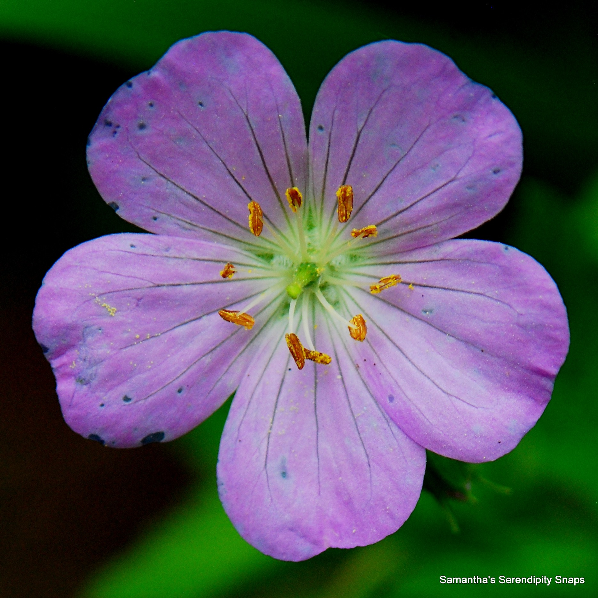
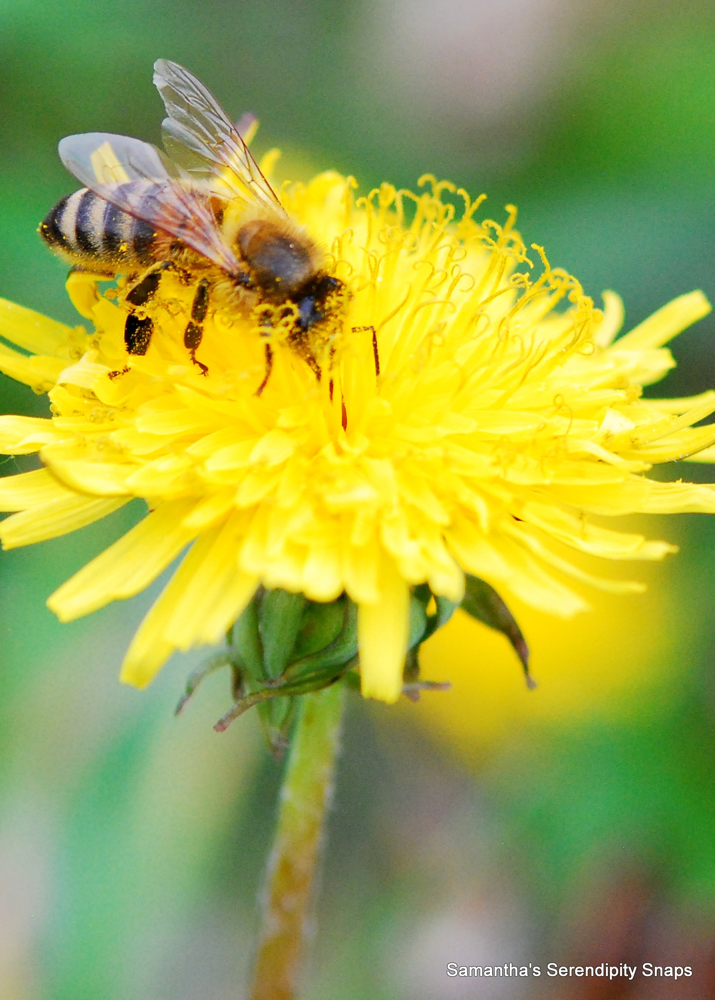
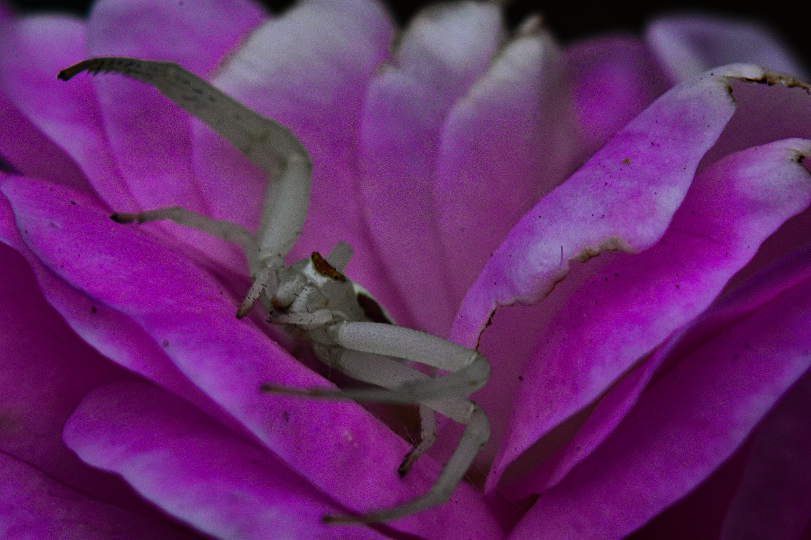
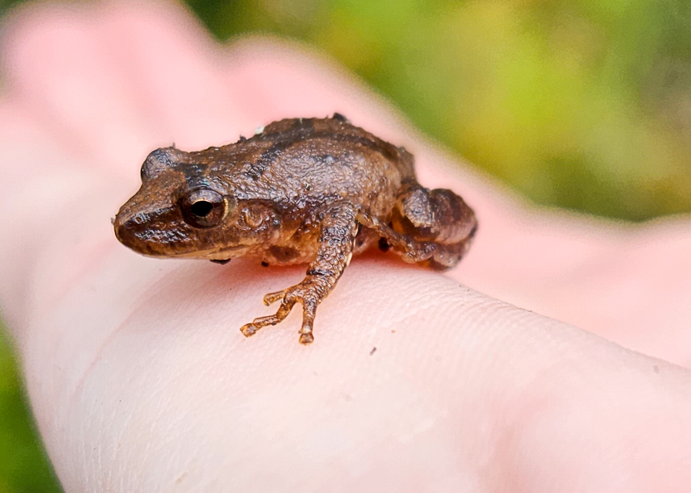
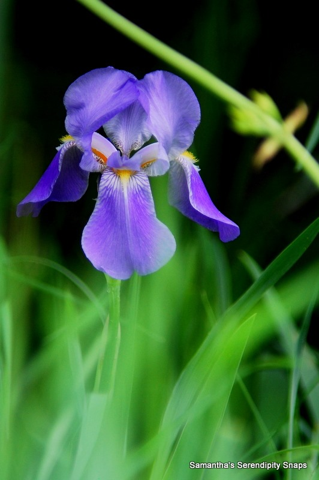
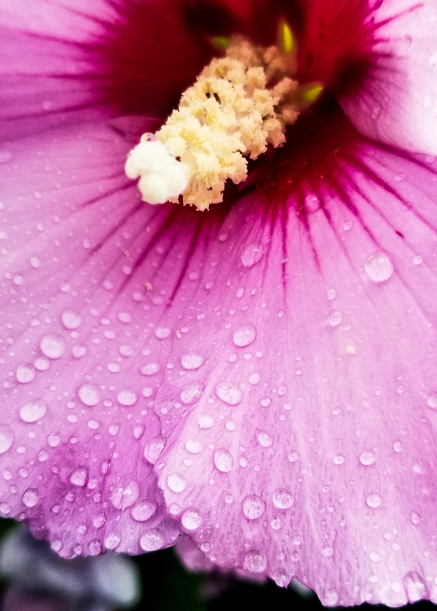
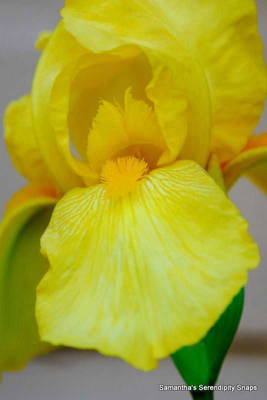

Samantha's Serendipity Snaps

Title "Flower Power"
This photo was taken in the summer of 2020 in Kingsley, Mi.

Title "Bee Happy"
This photo was taken in the summer of 2021 in Kingsley, Mi. Bee's are what started my love for photography. The details in the wings has always drawn me in. The more you look at them the more detail you notice.

Title "Spider Scene"
This photo was taken in the summer of 2020 in Kingsley, Mi. I have never been a fan of spiders, but this guy comes back every summer and relaxes in my wild roses.
Title "Flower Power"
This photo was taken in the summer of 2022 in Brimley, Mi at the Point Iroquois Lighthouse.

Title "Flower Power"
This photo was taken in the summer of 2022 in Williamsburg, Mi. Frogs have always facinated me as well. This friendly frog was in the woods and we didn't want to step on him. Once I picked him up he did not want to leave my hand.

Title "Inspiration"
This photo was taken in the summer of 2021 in Kingsley, Mi. Iris', specifically purple ones, have always been one of my favorite flowers. If you look closely, this image is actually in inspiration for my logo.

Title "Water Flower"
This photo was taken in the summer of 2022 in Kingsley, Mi. Seeing the detail in even the smallest things makes me so happy. So I coulsn't pass up the water droplets on this flower.

Title "It was all Yellow"
This photo was taken in the summer of 2022 in Traverse City, Mi. Again with the Iris', This one was yellow which I don't see to often since around my house I only have purple Iris'. So I had to capture this when I saw it.
Want to learn more?
Head over to samanthasserendipitysnaps.weebly.com and expore all we have to offer!